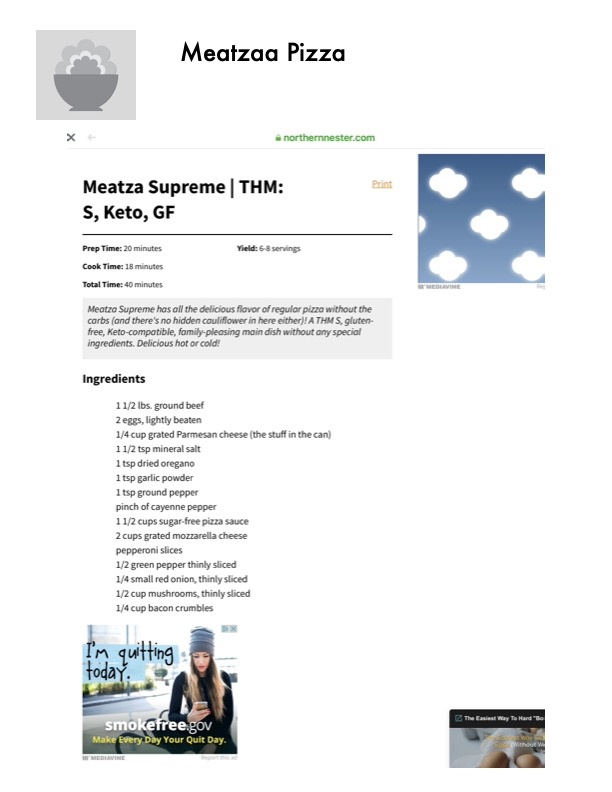

Meatza Supreme

Original cookbook page 9
All the delicious flavor of regular pizza without the carbs! A THM S, gluten-free, keto-compatible, family-pleasing main dish without any special ingredients. Delicious hot or cold!
Prep: 20 minutes • Cook: 18 minutes • Total: 40 minutes
Ingredients
- 1 1/2 lbs ground beef
- 2 eggs, lightly beaten
- 1/4 cup grated Parmesan cheese (the stuff in the can)
- 1 1/2 tsp mineral salt
- 1 tsp dried oregano
- 1 tsp garlic powder
- 1 tsp ground pepper
- Pinch of cayenne pepper
- 1 1/2 cups sugar-free pizza sauce
- 2 cups grated mozzarella cheese
- Pepperoni slices
- 1/2 green pepper, thinly sliced
- 1/4 small red onion, thinly sliced
- 1/2 cup mushrooms, thinly sliced
- 1/4 cup bacon crumbles
Instructions
- Preheat oven to 425°F.
- Combine ground beef, eggs, Parmesan cheese, mineral salt, oregano, garlic powder, ground pepper, and cayenne pepper. Mix well.
- Press the meat mixture onto a lined baking sheet or pizza pan to form a thin, even crust.
- Bake the meat crust for 12-15 minutes until cooked through and firm.
- Spread sugar-free pizza sauce over the baked meat crust.
- Top with mozzarella cheese, pepperoni slices, green pepper, red onion, mushrooms, and bacon crumbles.
- Return to oven and bake 5-8 minutes until cheese is melted and bubbly.
- Let cool slightly before slicing. Serve hot or cold.
Recipe #9 from collection